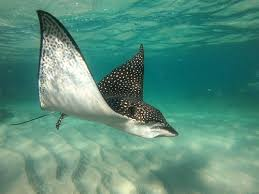
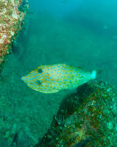
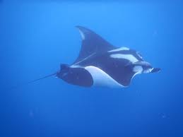
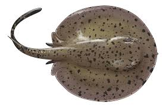
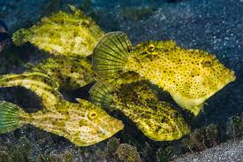
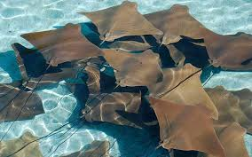

Introducción
Los rayiformes son un grupo de peces cartilaginosos que incluyen a las rayas y lijas. Estos animales han sido una parte importante de los océanos durante millones de años, y su estudio puede proporcionar valiosas lecciones sobre la evolución y la adaptación.
Especies de rayiformes
Raya manta (Manta birostris)

La raya manta es una de las especies más grandes de rayas, puede alcanzar hasta 7 metros de ancho y pesar hasta 2 toneladas.
Raya águila (Myliobatis aquila)
La raya águila es una especie de raya que se encuentra en aguas cálidas y templadas de todo el mundo.
Lija de mar (Pristis pectinata)
La lija de mar es una especie de lija que se encuentra en aguas cálidas y templadas de todo el mundo.
Raya de aguas profundas (Bathyraja abyssicola)
La raya de aguas profundas es una especie de raya que se encuentra en aguas profundas de todo el mundo.
Raya de aguas cálidas (Dasyatis sabina)
La raya de aguas cálidas es una especie de raya que se encuentra en aguas cálidas de todo el mundo.
Lija de río (Pristis microdon)
La lija de río es una especie de lija que se encuentra en ríos y estuarios de todo el mundo.
Raya de aguas frías (Raja clavata)
La raya de aguas frías es una especie de raya que se encuentra en aguas frías de todo el mundo.
Raya de aguas templadas (Raja montagui)

La raya de aguas templadas es una especie de raya que se encuentra en aguas templadas de todo el mundo.
Lija de mar profunda (Pristis perotteti)

La lija de mar profunda es una especie de lija que se encuentra en aguas profundas de todo el mundo.
Tabla comparativa
| Especie | Tamaño máximo | Peso máximo | Hábitat |
|---|---|---|---|
| Raya manta | 7 metros | 2 toneladas | Aguas cálidas y templadas |
| Raya águila | 2 metros | 50 kg | Aguas cálidas y templadas |
| Lija de mar | 1 metro | 10 kg | Aguas cálidas y templadas |
| Raya de aguas profundas | 1,5 metros | 20 kg | Aguas profundas |